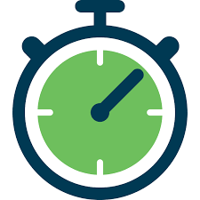

<ion-content class="ion-text-center">
  
  <p>{{ heartRate.statusMessage }}</p>
  <p>RR interval: {{ heartRate.rrMessage }}ms</p>
  <br />

  <div [hidden]="skrij">
    <button (click)="pricniMerjenje()" class="stoparicaGumb" block>
      
      <b>Prični z merjenjem</b>
    </button>
  </div>

  <div [hidden]="!skrij">
    <h3>{{ timeLeft }}</h3>
    <ion-button color="secondary" outline (click)="prekiniMerjenje()"
      >Prekini merjenje</ion-button
    >
  </div>
</ion-content>
